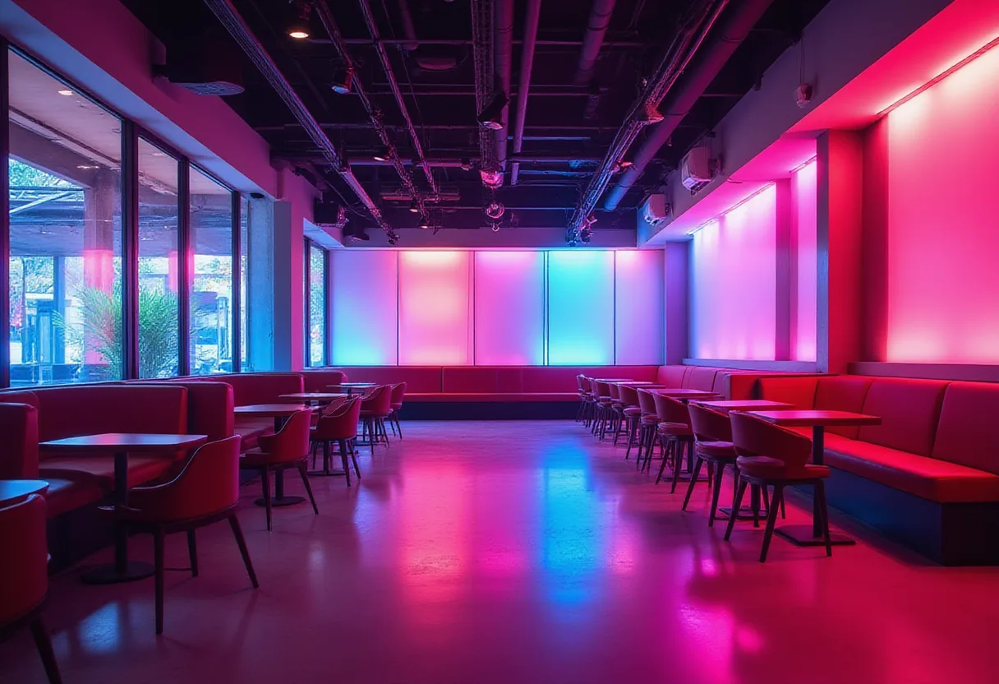
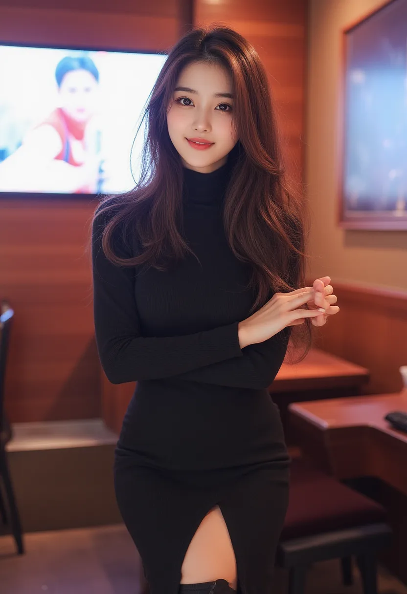
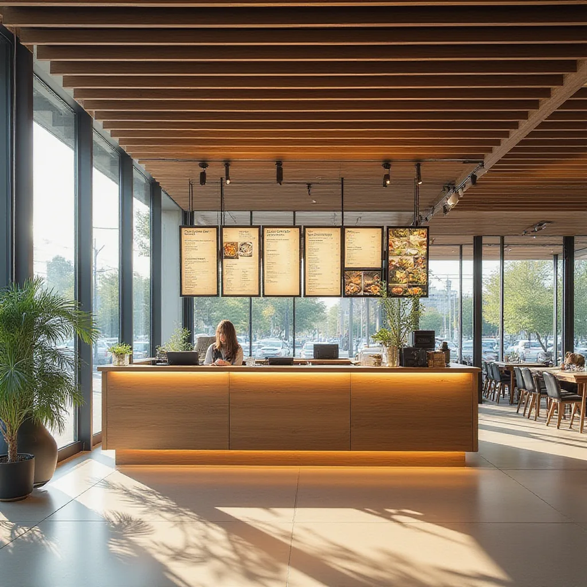
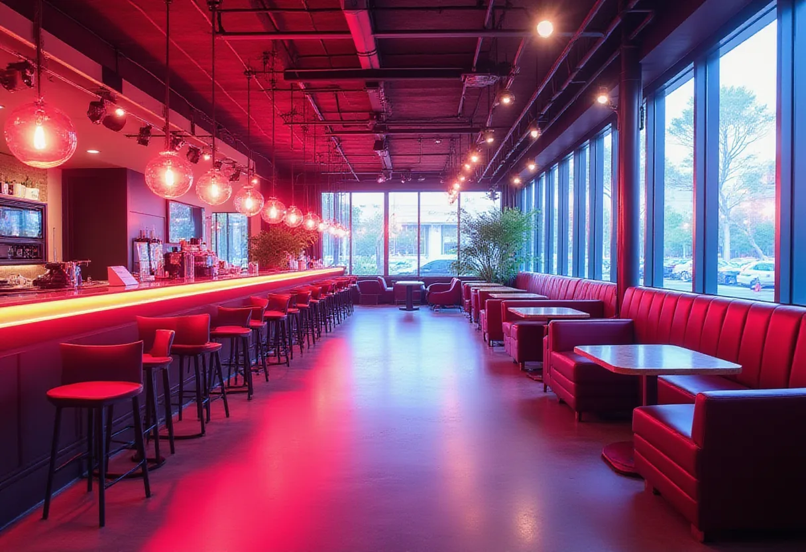

상수 노래방
특징
코인·시간제 두 형태. 최신곡·고음질 음향·청결한 부스.
가격대
코인 500~1,000원/곡·시간제 15,000~25,000원/시간
이용 방법
현장 결제 후 부스 선택. 주류 제공 여부는 업소마다 상이.
추천 상황
가벼운 1차·친구와 즉흥 노래·예산에 맞춘 회식.

노래방을 중심으로 다양한 유흥 업소를 한눈에 비교하고, 상황별 최적 선택을 도와드립니다.
코인·시간제 두 형태. 최신곡·고음질 음향·청결한 부스.
코인 500~1,000원/곡·시간제 15,000~25,000원/시간
현장 결제 후 부스 선택. 주류 제공 여부는 업소마다 상이.
가벼운 1차·친구와 즉흥 노래·예산에 맞춘 회식.
| 항목 | 내용 |
|---|---|
| 특징 | 대형 룸, 샹들리에·대리석·벨벳 소파, 방음 완비, 매니저 동석. |
| 가격대 | 1인 30~70만원 (룸티+주대+TC). |
| 운영 | 1부(저녁)·2부(심야), 2부가 더 비쌈. |
| 추천 대상 | 기업 임원·비즈니스 미팅·VIP. |
강남·청담·압구정 수준의 최상위 1% 유흥, 명품 가구·미술품, 완벽 방음.
1인 50~100만원 이상, 회원제 존재(가격 언급 금기).
지인 소개 필수, 발렛·전용 출입구 제공.
기업 오너·유명인·재력가 등 절대적 프라이버시 필요 시.
| 항목 | 내용 |
|---|---|
| 특징 | 룸살롱·식사·노래방·공연 올인원, 뷔페·식사 포함. |
| 가격대 | 1인 20~40만원 패키지. |
| 이용 방법 | 넓은 홀·룸·식당·무대 이용, 노래방 기기 구비. |
| 추천 상황 | 단체 회식·동창회·송년회, 이동 없이 모두 가능. |
Q: 상수 노래방은 어떤 시설을 제공하나요?
A: 최신곡과 고음질 음향을 갖춘 코인·시간제 부스를 제공하며, 일부 방은 주류와 안주를 함께 즐길 수 있습니다.
Q: 셔츠룸과 하이퍼블릭의 차이는 무엇인가요?
A: 셔츠룸은 매니저가 와이셔츠 차림으로 접객하는 중상급 유흥이며, 하이퍼블릭은 바 형태와 룸을 혼합한 캐주얼 공간으로 주류 선택 자유도가 높습니다.
Q: 텐프로와 텐카페는 어떻게 다른가요?
A: 텐프로는 초고가 프리미엄 프라이버시를 제공하는 1% 전용 유흥이고, 텐카페는 카페 분위기에서 매니저와 대화가 중심인 유흥 형태입니다.
Q: 풀싸롱 이용 시 사전 예약이 필요한가요?
A: 대규모 인원과 다양한 시설 이용을 위해 사전 예약을 권장합니다. 패키지 가격에 뷔페·식사·노래방 이용이 모두 포함됩니다.
운영 시간 및 상세 안내는 업종 페이지를 참고해 주세요. 직접 문의는 이메일(info@karaoke-sangsu-pro.xyz)을 이용해 주세요.
한빛 로컬가이드 — 상수 지역 정보를 5년간 정리해온 로컬 가이드입니다.



